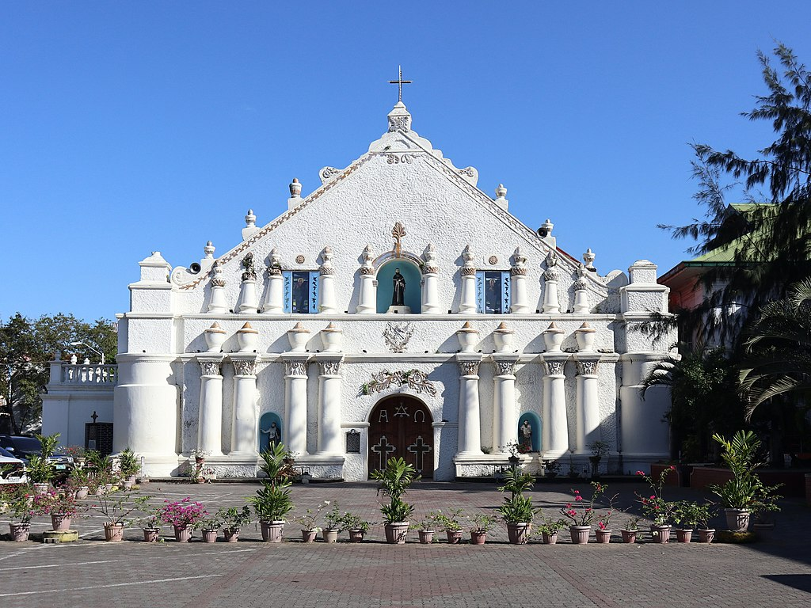

St. William's Cathedral
St. William the Hermit Cathedral Located in Laoag City, Ilocos Norte, St. William Cathedral (Spanish: Catedral de San Guillermo) was built in 1612 by Augustinian friars to replace an earlier wooden chapel. It serves as the seat of the Roman Catholic Diocese of Laoag. The original wooden church was established in 1580, and the current structure’s foundation was laid in 1612. After fire damage in 1843, it was restored between 1873 and 1880. The church was occupied by revolutionists in 1898 and American forces in 1899, with ownership disputes resolved in favor of the Roman Catholics. Renovations included lime plaster in 1936 and additional work between 1971 and 1972. The church suffered slight damage from an earthquake in 1983.Notable for its Italian Renaissance design, the cathedral features a unique two-storey façade with a niche displaying the city's patron saint, San Guillermo el Ermitaño. It includes capiz windows with wrought iron screens, a main retablo, and two smaller side retablos.